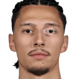

Played 4 seasons for 2 teams; his teams went 22–28 in his games.
Jump to: Record by opponent · Season by season · Teammate help
Compare Olivier Sarr with…
Final NBA finish, season by season
Title Finals Other playoffs Missed playoffs. #1 = champion; the dashed line is last place that season. Each point opens that season's final standings.
All 30 teams ranked in 2025-26, his best finish (#4)Teammate help
 Shai Gilgeous-Alexander10.02 seasons
Shai Gilgeous-Alexander10.02 seasons Donovan Mitchell4.01 season
Donovan Mitchell4.01 season Jalen Williams0.21 season
Jalen Williams0.21 season
Career
Career records (W–L, W − L, with and without) include 2026-27 games through Nov. 22, 2026; season counts and finishes are through 2025-26. Each card opens its board in the same scope. How we count.

With and without his teammates
His 12 teammates with the most regular-season games together. "Together" is the team's record in the games both played for it; "Without him" is the team's record in the games Olivier Sarr played for that team while the teammate was on it (between the teammate's first and last game for the team, the appearance span) and the teammate did not play. Fewer than 20 games without him: no gap. Games through Nov. 22, 2026. How we count.
 Aaron Wiggins
Aaron Wiggins Oklahoma City 2021-22 to 2023-24
Oklahoma City 2021-22 to 2023-24- Together
- 16–24 40.0%
- Without him
- 2–3 40.0%
- Gap
- Too few games without him

Lindy Waters IIIOklahoma City 2021-22 to 2023-24- Together
- 16–21 43.2%
- Without him
- 3–4 42.9%
- Gap
- Too few games without him
- Shai Gilgeous-AlexanderOklahoma City 2021-22 to 2023-24
- Together
- 13–21 38.2%
- Without him
- 1–3 25.0%
- Gap
- Too few games without him
- Tre MannOklahoma City 2021-22 to 2023-24
- Together
- 10–16 38.5%
- Without him
- 3–5 37.5%
- Gap
- Too few games without him
 Luguentz DortOklahoma City 2021-22 to 2023-24
Luguentz DortOklahoma City 2021-22 to 2023-24- Together
- 12–13 48.0%
- Without him
- N/A N/A
- Gap
- Too few games without him
 Aleksej PokusevskiOklahoma City 2021-22 to 2023-24
Aleksej PokusevskiOklahoma City 2021-22 to 2023-24- Together
- 10–15 40.0%
- Without him
- 4–10 28.6%
- Gap
- Too few games without him
 Isaiah JoeOklahoma City 2022-23 to 2023-24
Isaiah JoeOklahoma City 2022-23 to 2023-24- Together
- 11–11 50.0%
- Without him
- 1–0 100.0%
- Gap
- Too few games without him
 Josh GiddeyOklahoma City 2021-22 to 2023-24
Josh GiddeyOklahoma City 2021-22 to 2023-24- Together
- 11–11 50.0%
- Without him
- 1–3 25.0%
- Gap
- Too few games without him
 Isaiah RobyOklahoma City 2021-22
Isaiah RobyOklahoma City 2021-22- Together
- 6–15 28.6%
- Without him
- 0–1 0.0%
- Gap
- Too few games without him
 Theo MaledonOklahoma City 2021-22
Theo MaledonOklahoma City 2021-22- Together
- 5–16 23.8%
- Without him
- N/A N/A
- Gap
- Too few games without him
- Jalen WilliamsOklahoma City 2022-23 to 2023-24
- Together
- 10–10 50.0%
- Without him
- 2–1 66.7%
- Gap
- Too few games without him
 Vit KrejciOklahoma City 2021-22
Vit KrejciOklahoma City 2021-22- Together
- 6–14 30.0%
- Without him
- 0–2 0.0%
- Gap
- Too few games without him
Latest completed seasons
- 2025-26·
 Cleveland·#4 of 3052–30 · Lost in the conference finals 0–4 to
Cleveland·#4 of 3052–30 · Lost in the conference finals 0–4 to  New York
New York - 2023-24·Oklahoma City·#5 of 3057–25 · Lost in the conference semifinals 2–4 to
 Dallas
Dallas - 2022-23·Oklahoma City·#19 of 3040–42 · Lost in play-in
Season by season
Newest first; every header sorts. Final NBA finish is the team's rank among all teams that season (#1 = champion) and opens that season's standings. "Without him" uses the team-season window; the span line counts only the games between his first and last game for the team.
| 2025-26 | #4 of 30 | 52–30 63.4% | Lost conf finals 0–4 | 4 of 82 | 3–1 75.0% | 49–29 62.8%span: 4–1, gap −5.0 | +12.2 | |
| 2023-24 | #5 of 30 | 57–25 69.5% | Lost conf semis 2–4 | 15 of 82 | 8–7 53.3% | 49–18 73.1%span: 48–18, gap −19.4 | −19.8 | |
| 2022-23 | #19 of 30 | 40–42 48.8% | Lost in play-in | 9 of 82 | 5–4 55.6% | 35–38 47.9%span: 6–4, gap −4.4 | +7.6 | |
| 2021-22 | #27 of 30 | 24–58 29.3% | Missed playoffs | 22 of 82 | 6–16 27.3% | 18–42 30.0%span: 6–19, gap +3.3 | −2.7 |
On/off, starts and close games
From the lineup data, 1996-97 on. On/off is net points per 100 possessions with him on the floor minus off, a different unit from the win-rate gaps. Started and off the bench are team records in those games; close games are those within 5 points in the last 5 minutes with him on the floor.
| 2025-26 | +24.3 | N/A | 3–1 75.0% | N/A | |
| 2023-24 | −2.6 | N/A | 8–7 53.3% | 0–1 0.0% | |
| 2022-23 | +15.4 | 1–0 100.0% | 4–4 50.0% | N/A | |
| 2021-22 | +11.2 | 0–2 0.0% | 6–14 30.0% | 2–2 50.0% |
Teammate help by season
Two separate numbers per season, each with every teammate that adds to it. Help this season = Teammates Score points for honors won that season by teammates who shared a game with him. Help coming in = the same teammates' honors from the season before. How help works.
- 2025-26Cleveland
Donovan Mitchell All-NBA 2ndAll-Star41 g
Help this season: 4 = 4 Donovan Mitchell
More: help coming in and other teammates
Help coming in (teammates' honors the season before): 16 = 8 Evan Mobley + 5 Donovan Mitchell + 3 James Harden
Other teammates (no honors that season): Tyrese Proctor 4 g, Riley Minix 4 g, Nae'Qwan Tomlin 4 g, Larry Nance Jr 4 g, Dennis Schroeder 3 g, Tristan Enaruna 3 g, Craig Porter 3 g, Keon Ellis 3 g, Evan Mobley 3 g, Max Strus 3 g, James Harden 2 g, Jaylon Tyson 2 g, Sam Merrill 2 g, Jarrett Allen 2 g and 2 more
- 2023-24Oklahoma City
Shai Gilgeous-Alexander All-NBA 1stAll-Star515 g
 Chet Holmgren All-Rookie 1st0.2515 g
Chet Holmgren All-Rookie 1st0.2515 g Cason Wallace All-Rookie 2nd0.12515 g
Cason Wallace All-Rookie 2nd0.12515 g
Help this season: 5.375 = 5 Shai Gilgeous-Alexander + 0.25 Chet Holmgren + 0.125 Cason Wallace
More: help coming in and other teammates
Help coming in (teammates' honors the season before): 5.25 = 5 Shai Gilgeous-Alexander + 0.25 Jalen Williams
Other teammates (no honors that season): Luguentz Dort 15 g, Aaron Wiggins 14 g, Isaiah Joe 14 g, Jalen Williams 13 g, Josh Giddey 13 g, Kenrich Williams 11 g, Ousmane Dieng 10 g, Lindy Waters III 10 g, Jaylin Williams 8 g, Vasilije Micic 6 g, Aleksej Pokusevski 6 g, Tre Mann 5 g, Davis Bertans 3 g, Gordon Hayward 3 g and 3 more
- 2022-23Oklahoma City
Shai Gilgeous-Alexander All-NBA 1stAll-Star56 gJalen Williams All-Rookie 1st0.257 g
Help this season: 5.25 = 5 Shai Gilgeous-Alexander + 0.25 Jalen Williams
More: help coming in and other teammates
Help coming in (teammates' honors the season before): 0.125 = 0.125 Josh Giddey
Other teammates (no honors that season): Ousmane Dieng 9 g, Aaron Wiggins 9 g, Jaylin Williams 8 g, Josh Giddey 8 g, Isaiah Joe 8 g, Luguentz Dort 8 g, Tre Mann 7 g, Lindy Waters III 7 g, Dario Saric 6 g, Jeremiah Robinson-Earl 6 g, Jared Butler 4 g, Aleksej Pokusevski 1 g
- 2021-22Oklahoma City
Josh Giddey All-Rookie 2nd0.1251 g
Help this season: 0.125 = 0.125 Josh Giddey
More: help coming in and other teammates
Help coming in (teammates' honors the season before): 0
Other teammates (no honors that season): Theo Maledon 21 g, Isaiah Roby 21 g, Lindy Waters III 20 g, Vit Krejci 20 g, Aleksej Pokusevski 18 g, Aaron Wiggins 17 g, Darius Bazley 15 g, Tre Mann 14 g, Shai Gilgeous-Alexander 13 g, Jeremiah Robinson-Earl 4 g, Jaylen Hoard 4 g, Mike Muscala 2 g, Derrick Favors 2 g, Ty Jerome 2 g and 8 more
Record against each opponent
Regular season, through 2025-26 (2026-27 games not included): 50 games, 22–28, against 23 franchises.
Grouped by franchise (named as today); game lists keep each team's name that season. Filters and the tab are kept in the URL, so a filtered view can be shared.
| Games list | |||||||
|---|---|---|---|---|---|---|---|
| 4 | 2–2 | 50.0% | 0 | N/A | 2021-22 to 2023-24 | ||
| 4 | 2–2 | 50.0% | 0 | N/A | 2021-22 to 2023-24 | ||
| 4 | 2–2 | 50.0% | 0 | N/A | 2022-23 to 2023-24 | ||
| 4 | 3–1 | 75.0% | +2 | N/A | 2021-22 to 2025-26 | ||
| 4 | 1–3 | 25.0% | −2 | N/A | 2021-22 to 2022-23 | ||
| 3 | 3–0 | 100.0% | +3 | N/A | 2021-22 to 2023-24 | ||
| 3 | 2–1 | 66.7% | +1 | N/A | 2021-22 to 2022-23 | ||
| 2 | 0–2 | 0.0% | −2 | N/A | 2021-22 to 2025-26 | ||
| 2 | 1–1 | 50.0% | 0 | N/A | 2021-22 to 2023-24 | ||
| 2 | 0–2 | 0.0% | −2 | N/A | 2023-24 | ||
| 2 | 1–1 | 50.0% | 0 | N/A | 2021-22 to 2025-26 | ||
| 2 | 1–1 | 50.0% | 0 | N/A | 2021-22 to 2023-24 | ||
| 2 | 0–2 | 0.0% | −2 | N/A | 2021-22 | ||
| 2 | 1–1 | 50.0% | 0 | N/A | 2021-22 | ||
| 2 | 0–2 | 0.0% | −2 | N/A | 2021-22 | ||
| 1 | 1–0 | 100.0% | +1 | N/A | 2023-24 | ||
| 1 | 0–1 | 0.0% | −1 | N/A | 2023-24 | ||
| 1 | 0–1 | 0.0% | −1 | N/A | 2022-23 | ||
| 1 | 1–0 | 100.0% | +1 | N/A | 2021-22 | ||
| 1 | 0–1 | 0.0% | −1 | N/A | 2023-24 | ||
| 1 | 0–1 | 0.0% | −1 | N/A | 2021-22 | ||
| 1 | 0–1 | 0.0% | −1 | N/A | 2022-23 | ||
| 1 | 1–0 | 100.0% | +1 | N/A | 2025-26 |
Rows add up to his career record in his games. A playoff series counts when he played in it; early round-robin games show as games only. How we count.
Arrival and departure
Team wins per 82 games the season before he arrived vs his first season there, and his last season vs the season after he left. He leaves a team only when his next season with games is for another team (or he never plays again); whole seasons he missed and came back from are one "Missed" row with the team's record without him. Per 82 so short seasons compare fairly. These are team records, not a measure of what he did.
| Arrived | 2025-26 | 2024-25: 64–18 64.0 per 82 | 2025-26: 52–30 52.0 per 82 | −12.0 wins | |
| Left | after 2023-24 | 2023-24: 57–25 57.0 per 82 | 2024-25: 68–14 68.0 per 82 without him | +11.0 wins | |
| Debut | 2021-22 | 2020-21: 22–50 25.1 per 82 | 2021-22: 24–58 24.0 per 82 | −1.1 wins |